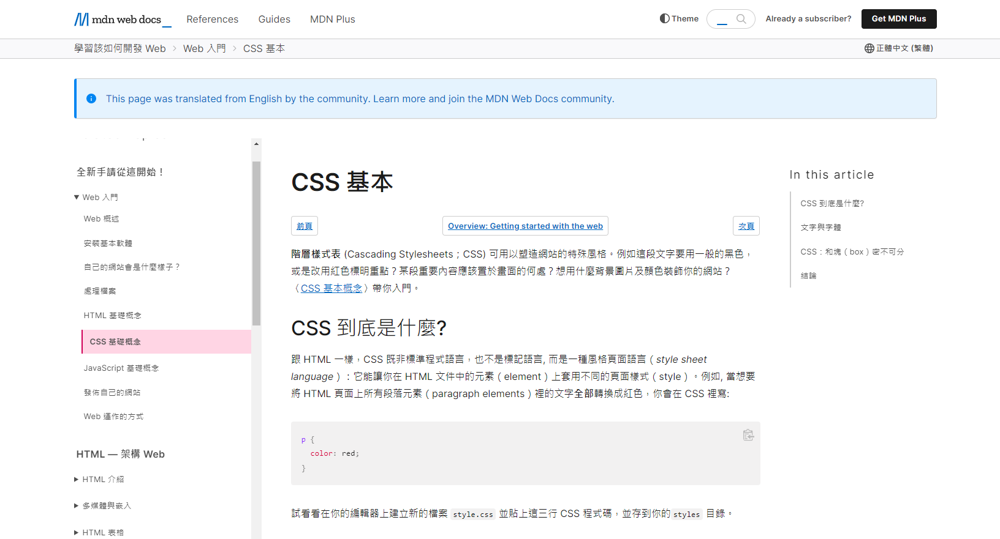

HTML | |
|---|---|
W3schools_HTML | 【html】1小時初學者教學 |
MDN Web Docs-HTML | HTML 基礎教學，建立屬於自己的網頁 |
PROGRESSBAR | HTML 簡介、語法基礎教學 |
ALPHAcamp_HTML | 網站架設入門必備觀念介紹 |
CSS | |
1keydata | 【css】2小時初學者教學 |
W3schools_CSS | CSS Grid Layout 格線佈局教學｜簡單完成網頁排版 |
MDN Web Docs-CSS | 金魚都能懂網頁設計入門 : 怎麼學CSS |
ALPHAcamp_CSS | 为初学者准备的：CSS 速成 |
JavaScript | |
W3schools_JavaScript | 【javascript】3小時初學者教學 |
MDN Web Docs-JavaScript | JavaScript 簡介、快速開始 |
鬍子科技學院 | 【前端速成】JavaScript JS 快速入門 |
Fooish程式技術 | JavaScript 教學 |